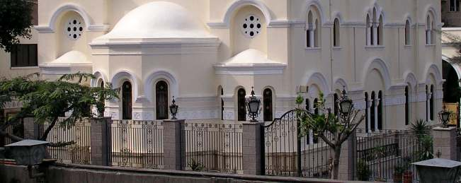
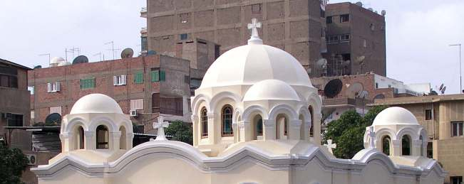

75 محمود فوزي البابا كيرلس وجمال عبدالناصر .. وعدنا بدورنا إلي الكتاب الذي أشار إ ليه قداسة البابا .. وننقل إليكم ھنا السطور المقصودة : ...... وفي دقائق كانت حشود من الجماھير تتطلع إلي ھذا المكان أمال في رؤية العذراء وتكرر في األيام التالية ھذا المشھد كثيرا مما دفع الرئيس ج مال عبدالناصر إلي أن يذھب إلي ھناك ومعه حسين الشافعي - سكرتير المجلس اإلسالمي األعلي وقتھا - ويقف في شرفة منزل أحمد زيدان كبير تجار الفاكھة , وكان منزله مواجھا للكنيسة , لكي يتحقق بنفسه من رؤية العذراء , وظل عبدالناصر ساھرا إلي أن ظھرت العذراء في الساعة الخامسة صباحا . http://www.wataninet.com/article_ar.asp?ArticleID=18269 : ر المصد St.-Marienkirche in Zaitun, Kairo السيدة كنيسة بالزيتون العذراء
St. Markus · 2008 · Deutsch
Worte von S.H. Papst Shenouda III zur Vierzigjahrfeier der
Ausgabe 2 · Seite 75

